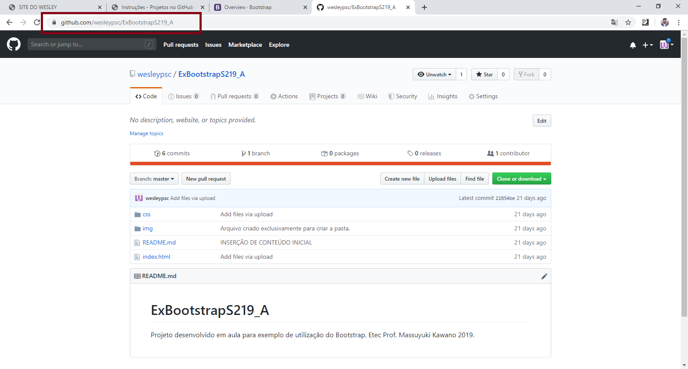

O primeiro passo é efetuar o download da ferramenta do Git, para desktop.
O download pode ser efetuado através do site http://git-scm.com
A instalação é simples. Avançar, avançar, avançar.....
Nesta etapa serão configurados o nome de exibição do usuário e e-mail.
Para configurar, acesse a pasta do projeto (pelo prompt de comando) e execute os comandos a seguir:
git config --global user.name "SEU NOME"
git config --global user.email "E-MAIL VINCULADO AO GITHUB"
Este passo só precisar ser executado na primeira vez da configuração.
Aqui é necessário criar um repositório no GitHub, que será utilizado para envio do projeto.
Este passo pode ser executado a qualquer momento.
Aqui, iniciaremos o processo de criação do repositório local, para vinculo posterior com o GitHub.
Para ininicar o repositório, execute o comando abaixo:
git init
Para conferir se os arquivos estão sendo vinculados, verifique o estado o estado do repositorio local: Se aparecerem itens vermelhos, eles ainda não foram enviados. Caso estejam verdes, já foi executado um envio para o GitGub.
git status
O comando git status pode ser executado a qualquer momento, para verificar o estado do repositório.
Executar o comando abaixo para preparar os arquivos no Git, para serem sincronizados futuramente.
git add .
O . pode ser substituido por *
Executar o comando abaixo para efetuar commit dos arquivos preparados no passo anterior.
git commit -m "MENSAGEM DO COMMIT"
Nesta etapa, o repositório local (GIT) será vinculado ao repositório remoto no GitHub. Para isso execute o comando a seguir:
git remote add origin LINK DO SEU REPOSITÓRIO
Exemplo: git remote add origin http://github.com/wesleypsc/GitHub
Este passo é executado apenas quando for criar e vincular um repositório. Depois de vinculado, não é necessário repetir esta etapa.
Por fim, ao executar o próximo comando, faremos o envio (upload) dos arquivos locais para o repositório remoto no GitHub
git push -u origin master
Em alguns casos, o GitHub verifica se existem arquivos remotos, que não estão no repositório local e com isso bloqueia o push. Para enviar mesmo assim, adicionar o parâmetro --force
Exemplo: git push --force -u origin master